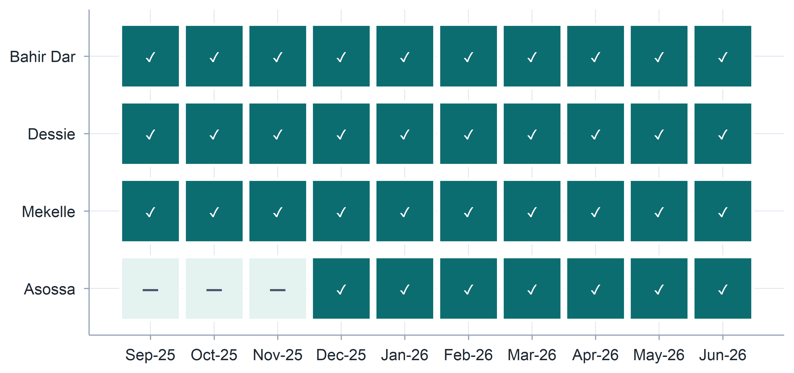
Annual TPM Performance Review
Part 1
C4ED | Center for Evaluation and Development
14 July 2026
Agenda
- Introduction
- Completeness and timeliness of records
- Review of reporting processes, gaps, and improvement opportunities
- Coverage and data quality
- Compliance with WFP policies
- Budget review, including current pressures and cost drivers
Introduction: The TPM Assignment at a Glance
Who we are
- C4ED: Center for Evaluation and Development
- Independent third-party monitoring (TPM) partner
What we monitor
- WFP food assistance
- Live distribution and post-distribution monitoring (PDM)
- Early warning, warehouse, market monitoring, livelihood and nutrition-related activities
- Across Amhara, Tigray and Benishangul-Gumuz
Year 1 at a Glance
- 62 monitors deployed (3 RMCs + 2 AMCs + 60 FMAs)
- 3 regions covered: Amhara, Tigray, Benishangul-Gumuz
- 42+ weekly flash / hot-button reports delivered
Full reporting cadence sustained throughout the year:
- Monthly monitoring plans, narrative and expenditure reports submitted on schedule
- Quarterly process and outcome monitoring reports (MoDA) delivered
- Coordination maintained with WFP HQ, Sub/Area-Offices
- Shared experiences and lessons with fellow TPM partner (JaRco)
How we work: weekly-to-quarterly reporting pipeline to WFP
Monthly monitoring plans
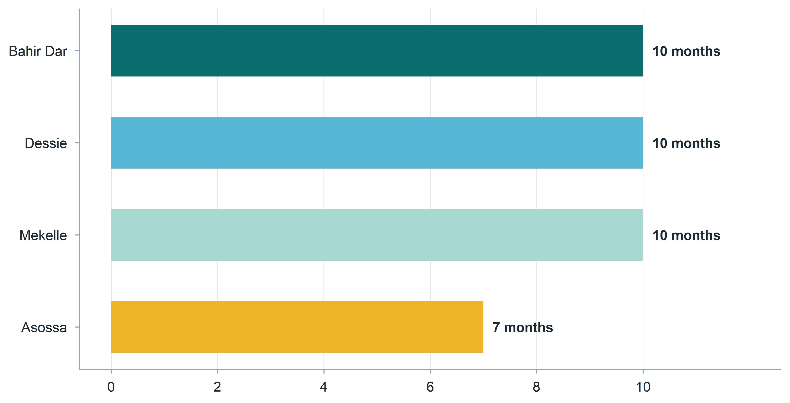
Weekly hot button/flash reports
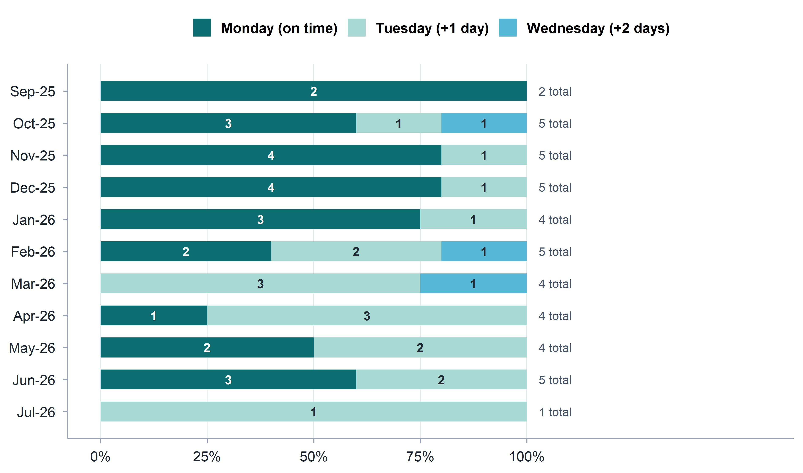
Monthly narrative and expenditure reports
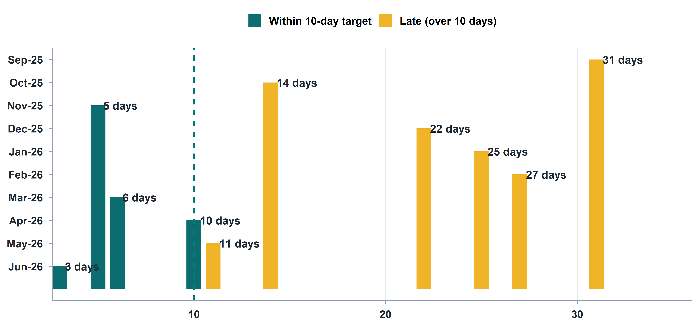
Process and outcome monitoring reports
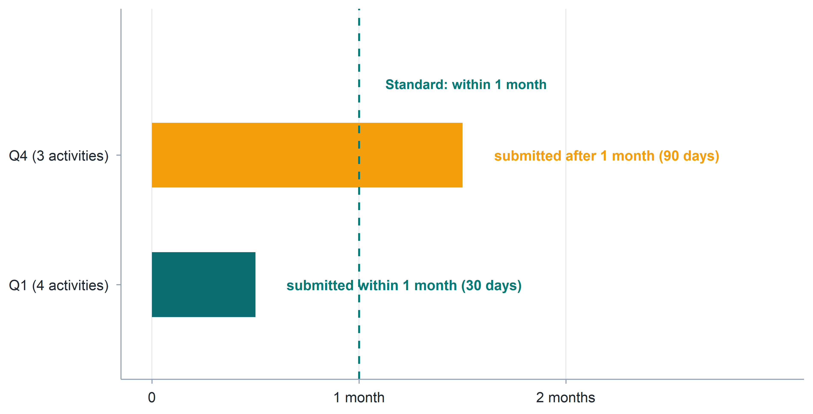
Review of reporting processes
- Weekly Reports: Robust collection system is well-established; compiled reports are typically submitted to WFP by Monday deadlines.
- Monthly Reports: On track despite occasional late submissions. Next step is integrating FMA activity monitoring data to enhance overall reporting depth.
- Quarterly Reports: Current timeline (uploads around the 8th) strains processing schedules.
- Request 1: Move the WFP upload to the 2nd working day of the month.
- Request 2: Increase upload frequency from quarterly to monthly. This allows rapid adaptation to checklist changes and would enable MoDA data cross-verification with FMA activity logs.
- Suggestion: Can be complemented by dashboards to maximize utility.
Coverage and data quality
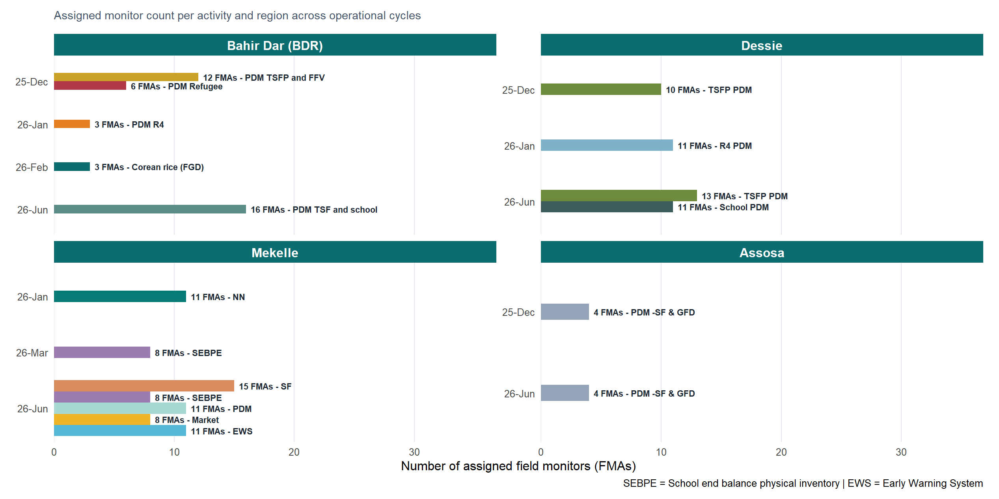
Post-Distribution Monitoring (PDM) deployments
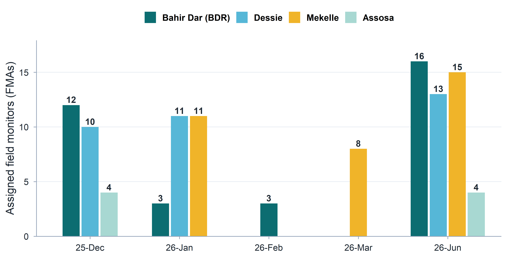
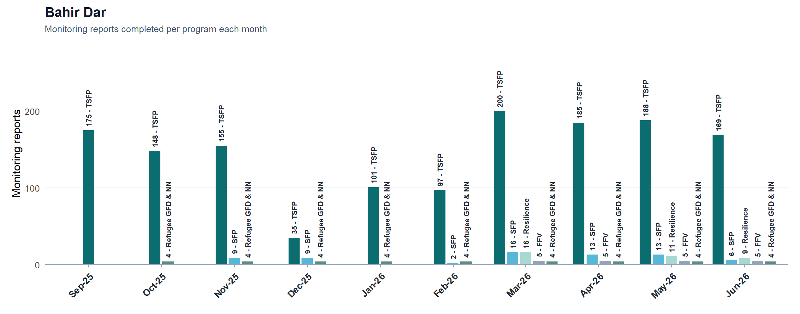
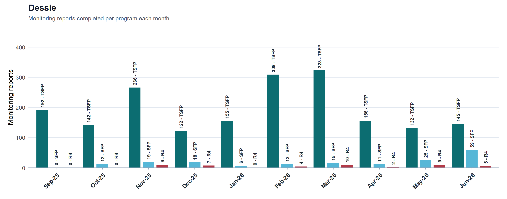
Staffing and deployment
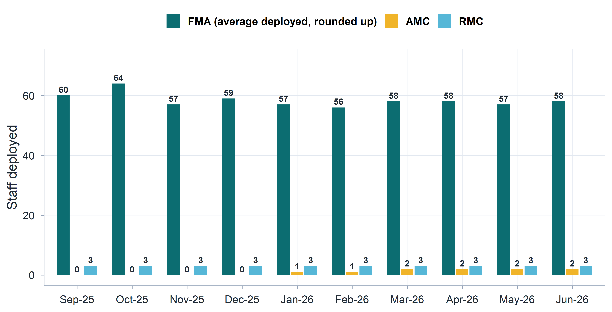
Training provided
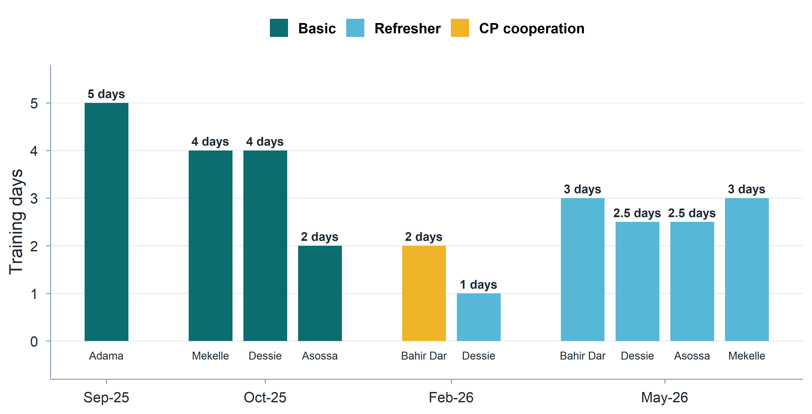
Management/support staff travel
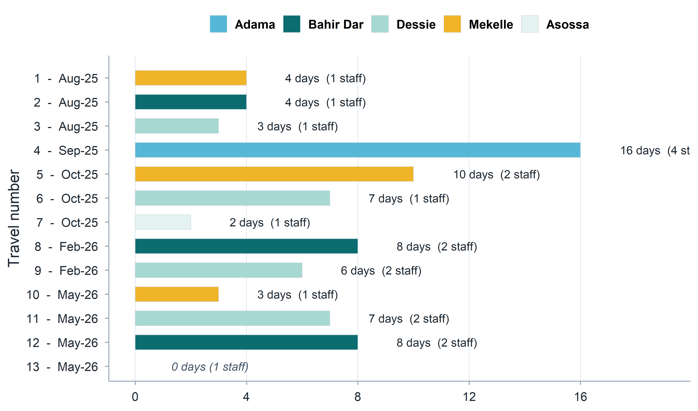
Equipment
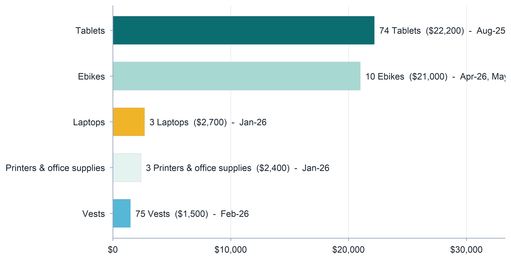
Compliance review: WFP Anti-Fraud & Anti-Corruption Policy (AFAC)
We maintain a zero-tolerance policy and strictly comply with WFP’s prohibitions against all Prohibited Practices:
- Fraud, Corruption & Theft: No misrepresentation for financial/personal advantage, no offering or soliciting bribes to influence actions, and zero tolerance for unauthorized taking of property.
- Collusive & Coercive Practices: No anti-competitive arrangements or improper behavior targeted at influencing WFP or other parties, and no use of threats, harm, or intimidation.
- Obstructive Practices: Full cooperation with official investigations - no destroying, altering, or concealing evidence, making false statements, or impeding WFP’s contractual access to information.
- Financial Integrity: Absolute prohibition of Money Laundering (concealing illicit funds) and the Financing of Terrorism (providing resources to any individuals or entities on the UN Security Council Consolidated List).
Compliance review: WFP Anti-Fraud & Anti-Corruption Policy (AFAC)
- Integrity and Accountability:
- FMA (few) claim activity despite facts
- Potential issues with transport reimbursement and overnight per diem
- In case of dismissal, we sometimes face issues with non-returned tablets (disciplinary issues and legal advisor on HR)
- Independence: Rotation enforced - to keep monitors alerted and to counter the risk of Corruption and Collusive Practices
- Professional Skepticism: High due to large volume of flagged issues (absence of evidence of Obstructive Practices)
- Theft: For example, consumption of WFP nutrition products.
- Sensitization of monitors through training and clear communication by Regional and Area Monitoring Coordinators
Compliance review: Prevention of Sexual Exploitation and Abuse (PSEA)
We strictly commit to WFP’s zero-tolerance policy regarding sexual exploitation and abuse, ensuring full alignment with UN standards and contractual mandates:
- Internal Policies in Place: We have established rigorous internal PSEA policies and behavioral standards matching the ethical expectations of WFP’s Code of Conduct.
- Active Awareness Measures: We undertake continuous organizational awareness training to ensure all personnel fully understand, prevent, and uphold these mandatory standards.
- Accountability & Action: We maintain strict mechanisms to prevent misconduct, immediately investigate any allegations, and implement rapid corrective actions.
Compliance review: Data protection
We comply with all data processing, transmission, and privacy mandates as the Processor:
- Authorized Processing & Purpose: We process Personal Data strictly under WFP’s written instructions, solely for agreed purposes, with no independent business use or proprietary claims.
- Secure Data Transfer: All data transfers utilize 128-bit AES encryption via secure email or SFTP using compliant formats (CSV, XML, JSON).
- Operational Transparency & Auditing: We maintain a detailed record of all processing activities available for WFP review and will immediately flag any violating privacy rules.
- Strict Third-Party Restrictions: No data sharing or third-country/cloud transfers without explicit, prior written authorization from WFP.
- 90-Day Data Retention Limit: All Personal Data are securely deleted/destroyed from all physical and digital systems within 90 days of acquisition (or upon request).
Compliance review: Information security
We comply with all requirements of the WFP Information Security Policy as the Processor:
- Security Framework: Maintain an active information security program aligned with industry standards.
- Data Protection & Encryption: Enforce full multifactor authentication (MFA), end-to-end encryption for all data (at rest, on mobile/storage devices, and in transit), and daily backups.
- System Resilience: Guarantee confidentiality, integrity, and availability with established protocols for regular testing, risk-based data governance, and rapid restoration in the event of an incident.
- Access Control: Maintain strict physical and logical access controls, including managed user lifecycles, administrative privilege tracking, and segregation of duties.
- Audit & Alignment: Subject to WFP security reviews/audits and written approval for any core system changes.
Budget review
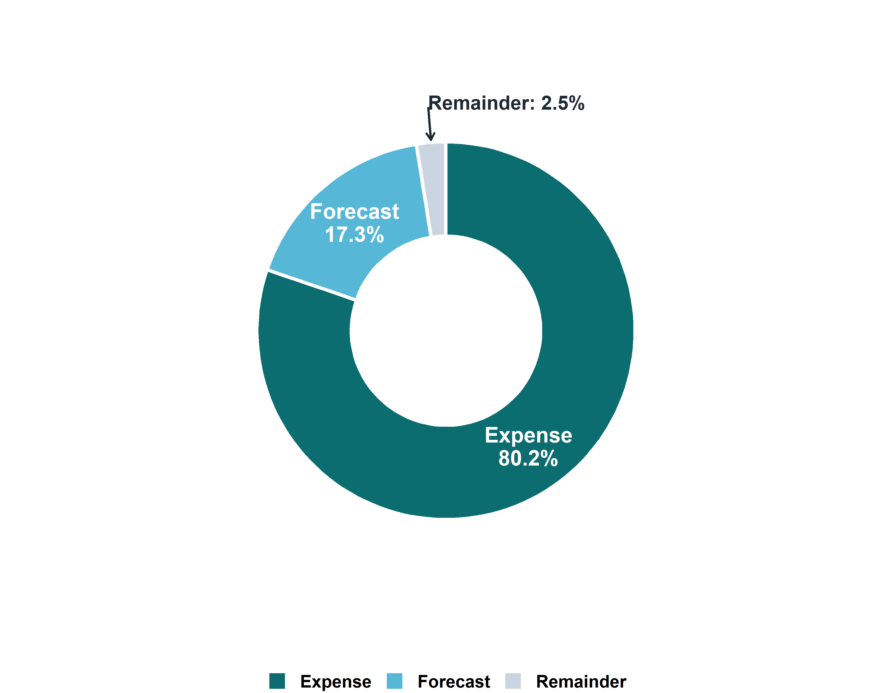

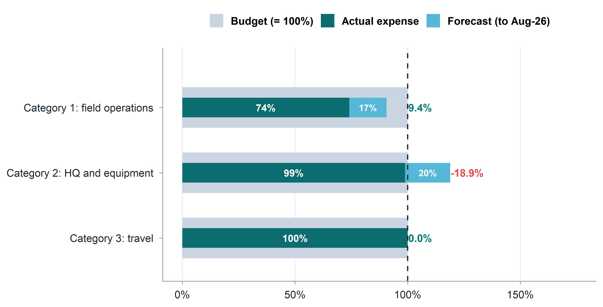
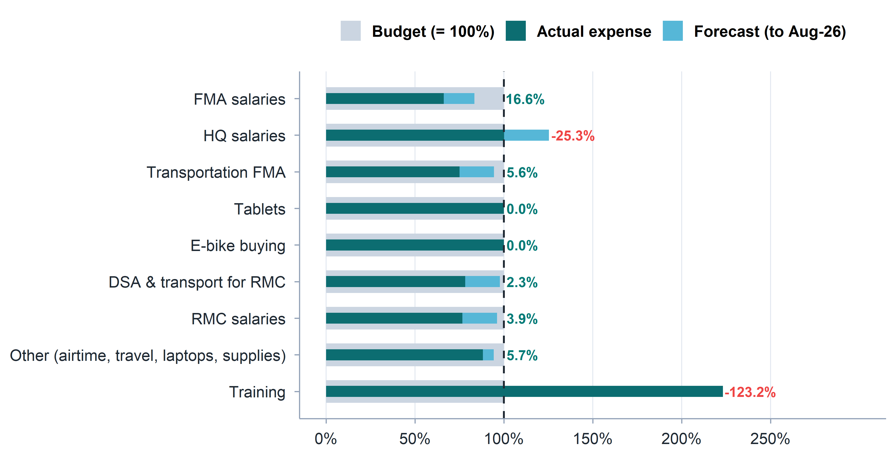
Finance review
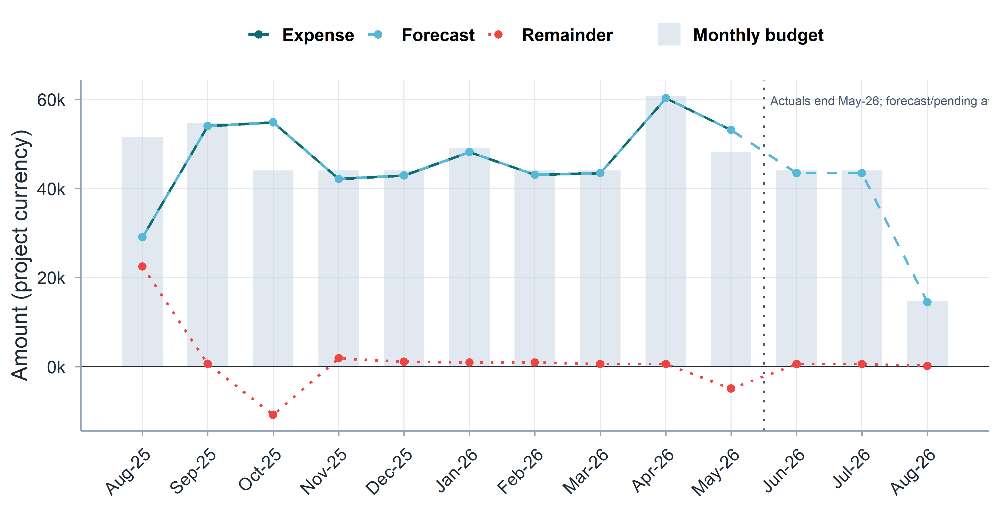
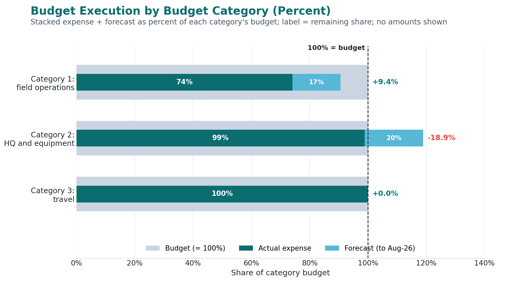
Budget review: Current pressures and cost drivers
- Transportation & Mobility: Rising fuel costs, local shortages, and regional transport constraints severely impact field efficiency. While (a limited number of) motorcycles assist monitor teams, current transportation provisions require a strategic review.
- DSA Alignment: Current overnight Daily Subsistence Allowance (DSA) rates are outdated and need adjustments to reflect the increased cost of living and prevailing regional market conditions.
- Compensation: Raised by TPM staff during trainings and review meetings, compensation packages are under pressure and need to be reviewed to ensure retention and motivation.
- Uneven/Expanded Scope: Originally budgeted for mostly process and basic output/outcome monitoring, monitors are managing complex tasks (Outcome Monitoring, PDM, Early Warning, and market assessments).
- Staff Capacity Deficits: In Tigray, insufficient staff due to the reduction from 23 to 15 FMAs. Currently, an overwhelming workload across multiple parallel surveys and pro
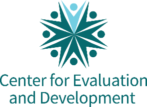
C4ED | Center for Evaluation and Development